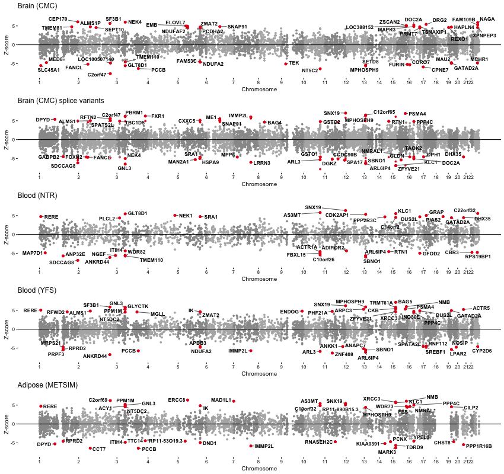

Supporting Materials for the manuscript “Transcriptome-wide association study of schizophrenia and chromatin activity yields mechanistic disease insights” Alexander Gusev, Nick Mancuso, Hilary Finucane, Yakir Reshef, Lingyun Song, Alexias Safi, Edwin Oh, Schizophrenia Working Group of the Psychiatric Genomics Consortium, Steven McCarroll, Benjamin Neale, Roel Ophoff, Michael C O’Donovan, Nicholas Katsanis, Gregory E Crawford, Patrick F Sullivan, Bogdan Pasaniuc and Alkes L Price (2016) [in submission] [preprint]
This page provides the documentation and data for analysis of gene expression, chromatin variation, and schizophrenia GWAS. For a general tutorial on TWAS, please see the main documentation at http://sashagusev.github.io/TWAS.
For questions or comments, contact Alexander Gusev [agusev@hsph.harvard.edu].
Manhattan plot of SCZ TWAS associations from each expression reference panel. Each point represents an individual gene with physical position on the x-axis and (signed) Z-score for association on the y-axis.

All transcriptome-wide significant TWAS associations.
Study: Expression reference panel used for TWAS (CMC/brain; NTR/blood; YFS/blood; MET/adipose). Z: Z-score for TWAS association, positive sign means increased expression leads to increased risk. INFO: Expected TWAS prediction R2. GWAS P: P-value of the best GWAS SNP in the 1MB locus. joint: Whether this gene was significant in a joint model using all genes (across all expression panels). chromatin: Chromatin TWAS associations (if any). Note: Use search bar to filter chromatin phenotypes (H3k27ac, H3k4me1, H3k4me3, DHS, RPB2, PU1) or reference panels.
| All SCZ TWAS association results across four expression reference panels | [ download ] |
| All chromatin-TWAS associations | [ download ] |
| TWAS expression weights | [ link ] |
Logo by Ryan Beck from The Noun Project